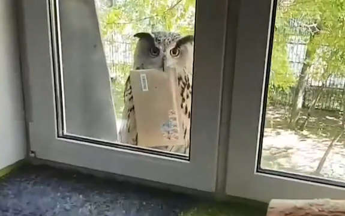
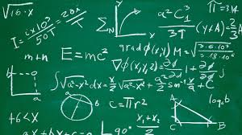

Tip 1: Fact-Check Rumors

While there are some unforgettable facts, the memory is not always a reliable storage for information. Even if someone says they remember that
something goes like so, remember to fact-check to be extra sure. Because of this, don’t always trust the comment or reply section unless there
are sources that back-up what someone is saying. People don’t have much incentive to share incorrect trivia, but if they do on purpose or accidentally,
you should be able to catch it before you start believing them.
Tip 2: Long ≠ Right

Some people accept information as correct just because there is a long, complicated explanation backing up the piece of information. Even if they
don’t know enough in the specific field to understand the explanation, they simply accept it as is since they trust the source’s knowledge. Unfortunately,
this is equivalent to accepting a student’s answer to a math problem as correct just because they had a solution. Do not be content with accepting
something just because it has an explanation. First, you have to make sure that the information you are reading or watching is correct. You can do this
easily by fact-checking. Second, if you’re going to learn something new, you might as well learn why it’s so. If you don’t understand the explanation in
the original source, you could always look for a simpler one.
Tip 3: Things Change
Not all kinds of general information are stagnant as the boiling point of water. In fields such as Science, some things are accepted as right until they
are proven wrong. Aristotle said that force was needed to keep an object moving and that was truth in scientific circles until Galileo’s experiments proved
otherwise. Pluto was considered a planet until they came up with official criteria in 2006 and it didn’t fit. The moon was believed to have less water
than when they discovered there was more hidden in its craters in 2020. This isn't only in Science, but also in other fields. A century ago, Philippines was
still a colony of the USA. What may have been considered true a few years ago may not be considered true today. In our world, things are forever changing,
from the way we live our lives to the way we look at things. You always have to keep updated as you may not be informed when something changes. But remember
that even if things always change, stick to what is true as of the present. After all, Mayon Volcano is still in the province of Albay since they haven’t
changed the province’s name yet.